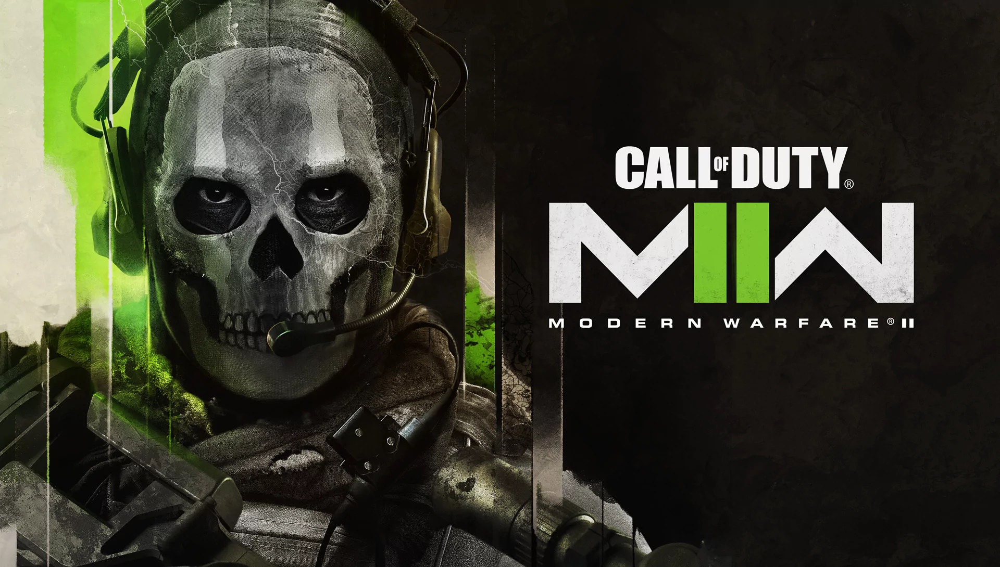

CALL OF DUTY MODERN WARFARE II 2022
Call of Duty: Modern Warfare II est le prochain jeu de tir à la première personne développé par Infinity Ward et publié par Activision . Il s'agit de la suite directe de Call Of Duty: Modern Warfare 2019 et servira de dix-neuvième épisode de la série Call of Duty .Sa sortie est prévue le 28 octobre 2022, pour PlayStation 4 , PlayStation 5 , Windows , Xbox One et Xbox Series X/S .
JOUABILITÉ
